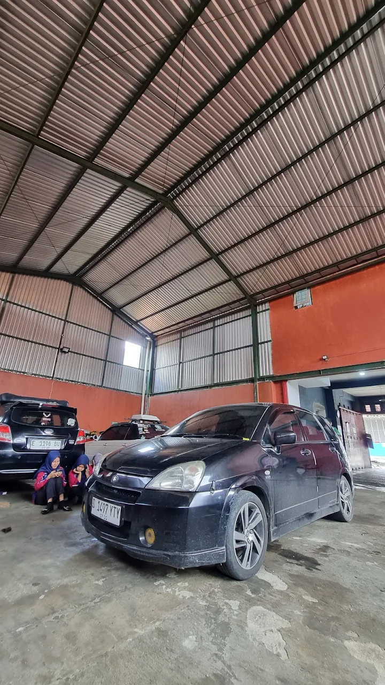
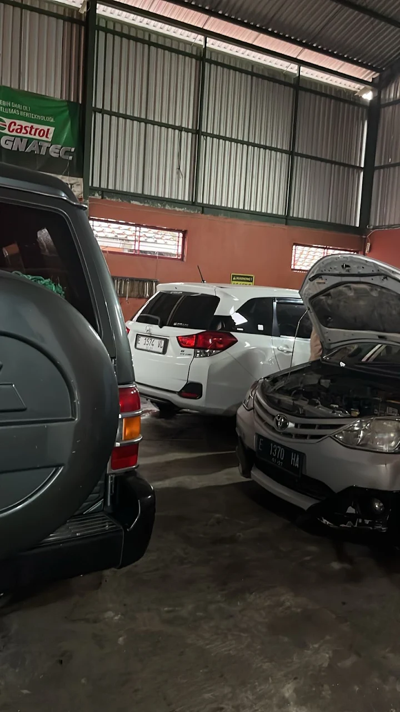
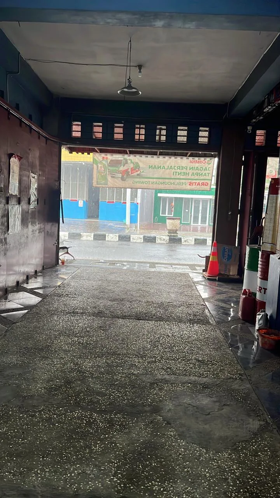

BUKA HARI INI · TUTUP PUKUL 16.30
SETIA.
Sejak pertama servis.
Bengkel mobil di Perbutulan, Kec. Sumber, Cirebon — dipercaya pelanggan untuk servis rutin sampai perbaikan berat, dengan mekanik yang jujur soal kondisi mobil kamu.
4,8dari 40 ulasan Google
AMANAH
“Bengkel terbaik di cirebon, pelayanan ramah dan amanah💖”
RECOMMENDED
“Servisnya mantap jiwa, karyawannya juga ramah-ramah, recommended buat servis deh.”
SPAREPART LENGKAP
“Sparepartnya komplit, service cepat, mekanik yang ahli di bidangnya.”
Satu bengkel,
segala keluhan mobil.
01Diagnostik mesin mobil
02Kelistrikan mobil
03Penggantian oli
04Perbaikan rem
05Reparasi suspensi & setir
06Pemasangan wiper blade
07Pembersihan karburator
08Pemeliharaan mobil
09Pemeriksaan kendaraan
10Penggantian baterai/aki
11Penyetelan mesin otomatis
12Reparasi kebocoran air
13Reparasi mesin
14Sistem pembuangan
15Uji emisi mobil
Bengkel yang
sebenarnya.



✦ MAU SERVIS?